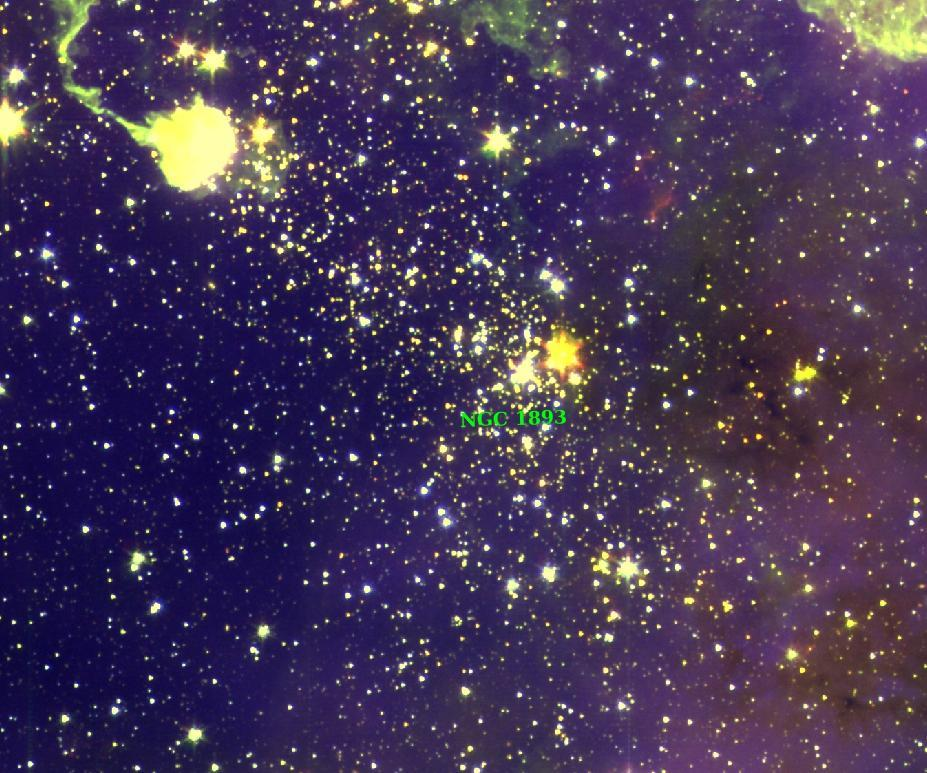
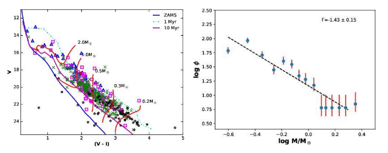

How do astronomers understand the evolution of young stars in star clusters?
This article is based on the paper published in the Journal of Astrophysics & Astronomy. The article shows the results of our deep optical photometric observations of a young cluster NGC 1893 taken with the 3.6m Devasthal Optical Telescope. Based on the optical data obtained with the data along with the Gaia data, we characterized the young stars in the central region of the cluster and determined their age, mass and membership. We found that the distribution of masses of young low-mass stars in the cluster is similar to that of other Galactic clusters. Our analysis suggested a primordial mass segregation in the cluster.
Stars form out of dense clouds made up of molecular gas and dust. A majority of these stars emerge as groups or clusters. Star clusters contain stars that are gravitationally stable against dispersion for reasonably long periods of time. Stars in a cluster have the same age and chemical composition (metallicity) but differ in mass and hence are found in different evolutionary stages, allowing astronomers to test stellar evolution theory.
Recent observational studies of nearby star-forming regions show that more than half of their young stars are associated with groups of ten or more stars. Therefore, young star clusters are crucial to understand the physical processes involved in the birth and evolution of stars and star clusters.

Fig. 1 : A young cluster NGC 1893 in star-forming region Sh2-236 (Credits: A color-composite image created using DSS2-R (blue), Spitzer-IRAC 3.6 micron (green) and Spitzer-IRAC 4.5 micron (red) images. )
Star clusters enable astronomers to place the stars of a wide range of masses within the Hertzsprung-Russel (HR) diagram that shows the relationship between a star’s temperature and its luminosity and infer their evolutionary stages and physical parameters, such as age, mass etc. The mass of a star is one of the most important factors providing constraint to its future evolution, but it is not clearly known what determines the exact mass of a newly forming star. One aspect of this problem is the knowledge of the distribution of stellar masses, initial mass function (IMF), in a star cluster. However, the precise statistics for low-mass stars (stars smaller than the Sun) are somewhat uncertain as they are faint. The theoretical basis for the IMF, variation with the metallicity, environment etc., is challenged by the observational evidence for the universality of the IMF. With the sensitive instruments mounted on moderate size telescopes, e.g., Canada-France-Hawaii Telescope, Devasthal Optical Telescope (DOT), Subaru etc., that are capable of detecting fainter low-mass stars, now it is possible to shed light on the IMF of the cluster towards the very low-mass end.
This research work focuses on a young star cluster NGC 1893 from the New General Catalog (NGC was compiled by J. L. E. Dreyer in the year 1888 and contains about 7840 celestial objects mostly galaxies, nebulae and star clusters). In order to get more insights into the properties of the stars in a young cluster NGC 1893 (Fig. 1), Dr. Neelam Panwar and a team of astronomers of the Aryabhatta Research Institute of Observational Sciences (ARIES) in India performed photometric monitoring of this cluster. For this purpose, they employed the 4Kx4K Imager camera mounted on the 3.6-meter ARIES DOT. Image Reduction and Analysis Facility (IRAF) software is used for image reduction and analysis. Various programs developed in Python and C++ programming languages are also used for data analysis and plotting. The optical data from DOT were deep enough to reveal very low-mass stars (about 0.2 times the mass of the Sun) in NGC 1893 (Fig. 2). The DOT data allowed the team to identify about 420 young stars in the central portion of the cluster, out of which 110 turned out to be new members. The study was complemented by archival data from ESA’s Gaia satellite, a sample of young stars obtained using infrared data from 2MASS/ Spitzer space telescope and Chandra X-ray data.

Fig.2 : HR diagram showing the evolutionary stages for different mass stars (left). Distribution of stellar masses in the young cluster (right). (Credit: arXiv:2111.11796 )
To determine the physical parameters of the cluster, it is essential to select the stars that are associated with the cluster. Since cluster members share nearly similar motion in the plane of the sky, Gaia Early Data Release 3 catalogue is used to select the kinematic members, i.e., stars having similar proper motion values and estimate the distance of the cluster using the mean parallax of the cluster members. The young cluster is found approximately 10,600 light years away from the Earth.
For faint stars (about V>20 mag which corresponds to about solar mass, as seen in the CMD for NGC 1893) there is higher uncertainty in the proper motion, parallax values.The kinematic information is accurate upto sun-like stars. As the cluster is young (with an age of less than 10 million years), its low-mass members are still contracting towards the main sequence. Hence, the low-mass cluster members are young stars for which the HR diagram (optical color-magnitude diagram) yields ages less than 10 million years. They also studied the mass distribution of the young low-mass stars in the cluster and found that it is similar to other young clusters, i.e., their results favour the idea of a universal IMF.
Observations of star clusters show that relatively massive stars are often found to be located toward the cluster centre. It is not well understood if this mass segregation is due to the dynamical evolution of the star cluster or if this is related to the star formation process itself. Their analysis also suggested that stars with masses above half of the solar mass are located toward the cluster centre as compared to the stars with masses lower than this limit, indicating primordial mass segregation in the young cluster
Original paper: Deep V and I CCD photometry of young star cluster NGC 1893 with the 3.6m DOT
First Author: Neelam Panwar
Co-authors: Amit Kumar, S. B. Pandey
First author’s Institution: Aryabhatta Research Institute of Observational Sciences (ARIES), Manora Peak, Nainital-263002